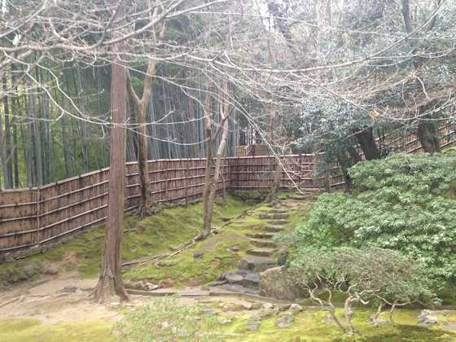
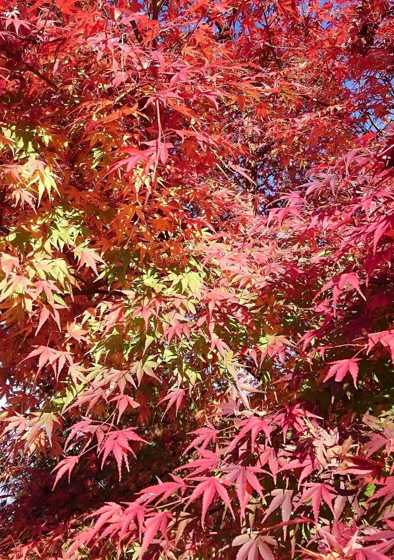
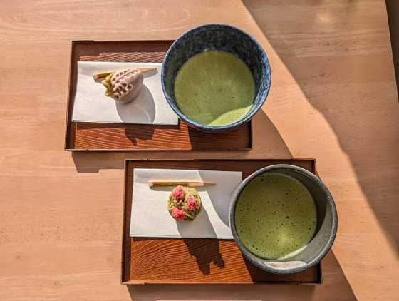
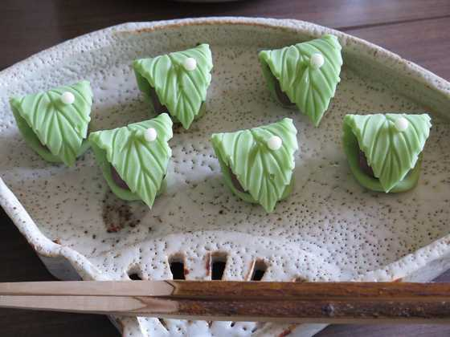
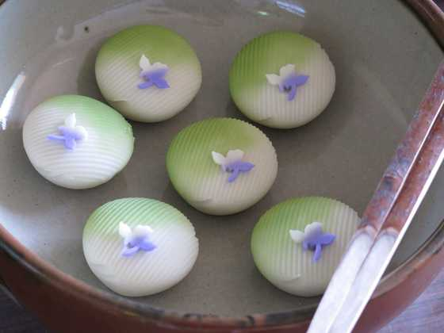
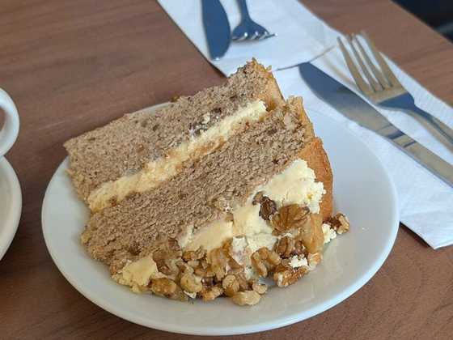
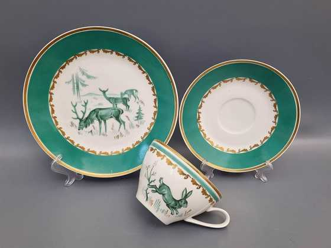

お店の由来・想い
物語の舞台と、街道の名前から。
羽州茶屋の名前は、直木賞作家・今村翔吾さんのデビュー作『火喰鳥 羽州ぼろ鳶組』の舞台である新庄藩と、店の前を通る羽州街道に由来すると紹介されています。オーナーは今村さんで、新庄市を「第二の故郷」として恩返しの思いで開いたと報じられています。
目指すのは、若い人が勉強でき、年配の人が集まって話せる場所。お店のお知らせには「本を片手にゆったりと」とあります。建物はかつて喫茶店だった場所で、店内には『火喰鳥』のキャラクターパネルやアニメの複製原画、2階には関連の展示や本が置かれ、本は店内であれば自由に読めると紹介されています(持ち出しは不可)。
情報源: やまがたgoto / 山形新聞(2026年9月) / Instagram
上記以外の言い回しは制作側の表現です。写真はすべてフリー素材のイメージで、お店の様子ではありません。



メニュー
ランチと甘味、ひと息の一杯。
開店時(2026年9月)の紹介記事による内容・税込表記です。変更されることがあるため、最新情報はInstagramでご確認ください。






口コミ
こんなお声が届くお店に(イメージ例)
イメージ例
本を読みながら、ゆっくりお茶ができました。静かで落ち着く時間でした。
イメージ例
ランチのあとに甘いものも。散策の合間に立ち寄れる場所があると嬉しいです。
イメージ例
物語の世界を感じられて、ファンの友人と一緒に楽しめました。
上記は制作側が作成したイメージ例で、実在のお客様の声ではありません。
アクセス
羽州街道沿い、新庄市本町。
| 所在地 | 山形県新庄市本町3-51 |
|---|---|
| 電話 | 準備中 |
| 営業時間 | 開店時の紹介では11:00〜18:00(日曜定休)。変更の可能性があるためInstagramでご確認ください。 |
| @usyuchaya |